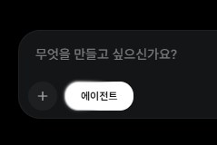
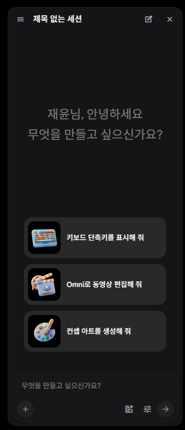
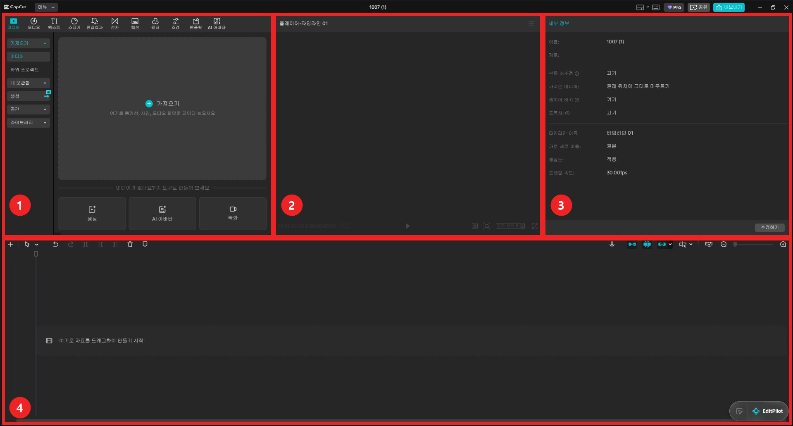

DAY 07AI 콘텐츠제작
캐릭터 애니메이션 + TTS 내레이션
스토리를 기획하고, 주인공 캐릭터를 만들고, 그 캐릭터를 Google Flow 에이전트에 첨부해 장면마다 영상을 만듭니다. AI 목소리(TTS)로 내레이션을 입히고 CapCut에서 이어 붙이면 30초~1분짜리 애니메이션 한 편이 됩니다.
1.오늘의 수업
스토리 → 캐릭터 고정 → 장면 영상 → 내레이션 → CapCut으로 완성
ChatGPT 또는 Gemini (기획) · Google Flow (캐릭터·장면) · AI 목소리 · CapCut
모든 장면에 같은 주인공이 나오는 짧은 애니메이션을, 기획부터 내레이션까지 한 번에 완성하기
오늘 쓸 크레딧 — 장면 영상 4~5개와 다시 만들기 몇 번, 대략 60~120크레딧. 캐릭터 이미지는 크레딧이 들지 않습니다. 정확한 값은 만들기 전에 화면에 표시됩니다.
2.오늘 배우는 내용 & 전체 흐름
3.시작 전에 — AI 작업은 기획이 80~90%
1교시
영상 제작은 엔터를 누르는 순간, 기도밖에 할 게 없습니다.
결과는 누르기 전에 정해집니다. 무엇을, 어떤 순서로, 무엇을 고정해서 만들지 — 이 기획이 결과의 80~90%를 결정합니다.
AI가 써 준 프롬프트는 만능이 아닙니다
AI가 써 준 프롬프트는 초안입니다. 넣기 전에 읽고, 과한 부분은 지웁니다.
4.실습: 스토리 기획하기
1교시 · 실습 SET 01
기획과 이미지 만들기는 ChatGPT가 특히 잘합니다. 계정이 있으면 ChatGPT에서, 없으면 Gemini에서 해도 같은 순서로 진행됩니다.
주인공이 한 명(한 마리)이고 대사 없이 행동으로 이해되는 이야기가 만들기 쉽습니다 — 고양이의 첫 출근 / 길 잃은 꼬마 로봇 / 우산을 쓴 개구리의 비 오는 날 / 작은 씨앗의 여행 / 펭귄의 여름 휴가 / 우리 동네 빵집 강아지
첫 기획이 평범하면 같은 채팅에서 — "방금 만든 기획을 애니메이션 감독이 기획한 것처럼 수정해줘. [내 주제]에 맞는 장면 구성과 강약이 들어갔으면 좋겠어. 장면 수는 그대로, 한 장면에는 행동 하나만."
빨리 끝난 분 — "장면을 8개로 늘려줘. 처음 흐름은 유지하고, 사이사이에 감정이 드러나는 장면을 넣어줘."
5.고정할 요소 정하기 — 주인공이 바뀌지 않게
1교시
고정할 요소 없이 장면을 만들면 장면마다 캐릭터가 바뀝니다. 1번 장면의 주황 고양이가 2번에서는 노란 고양이가 됩니다. 그래서 먼저 "모든 장면에서 똑같아야 할 것"을 정합니다 — 캐릭터 · 인물 · 소품 · 상품.
받은 "주인공 생김새 3줄"은 메모장에 저장해 두세요. 캐릭터 이미지와 모든 장면 프롬프트에 그대로 씁니다.
6.실습: 주인공 캐릭터(히어로샷) 만들기
1교시 · 실습 SET 02
히어로샷
주인공의 모습을 가장 잘 보여 주는 기준 이미지 한 장입니다. 모든 장면을 만들 때 이 이미지를 매번 첨부합니다. DAY 06 캐릭터 설정표가 있으면 그걸 써도 됩니다(선택).

- · Flow 설정에서 이미지, 개수 x2~x4로 여러 장 받아 하나 고르기
- · 내려받아 저장 (이름: hero)
- · 왼쪽 메뉴 캐릭터에 등록해 두면 장면마다 불러오기 편합니다
- · 등록했어도 장면을 만들 때 첨부했는지 매번 확인
7.실습: 장면별 영상 프롬프트 받고 길이 정하기
1교시 · 실습 SET 03
기획한 채팅에서 이어서 요청합니다. 과한 프롬프트가 나오지 않도록 처음부터 조건을 걸어 둡니다.
꼭 알아 둘 한 마디 — "카메라 고정"
카메라가 제멋대로 돌면 캐릭터 모습도 쉽게 무너집니다. 장면이 자꾸 이상하면 끝에 "카메라 고정"을 붙이고, 움직임은 캐릭터에게만 맡기세요.
길이와 크레딧은 내가 판단합니다
AI가 정해 준 길이를 그대로 따르지 않습니다. 받은 프롬프트를 읽고, 이 장면이 짧은 장면인지 긴 장면인지 스스로 정합니다.
길수록·화질이 높을수록·개수가 많을수록 크레딧이 더 듭니다. 예상 크레딧과 남은 크레딧을 보고 몇 번 고칠지도 내가 정합니다.
8.실습: Flow 에이전트로 장면 만들기
2교시 · 실습 SET 04




- 1Flow 새 프로젝트 → 입력창의 에이전트 열기
- 2+로 히어로샷 첨부 (장면마다 매번)
- 3아래 틀에 장면 프롬프트를 넣어 보내기
- 4크레딧 사용을 물으면 승인 (항상 승인은 누르지 않기)
9.결과 보고 고치기 — 마음에 들 때까지, 그리고 픽스
2교시
1번을 마음에 들 때까지 고쳐 픽스 → 2번 → 3번… 앞 장면을 보며 다음 장면을 맞출 수 있습니다.
모두 만든 뒤 어긋난 장면만 다시. 잘 나온 장면을 캡처(Win + Shift + S)해 첨부하고 "1번·3번 장면의 캐릭터 모습과 색감을 참고해서 2번을 다시"
픽스한 영상은 바로 내려받아 scene01, scene02…처럼 번호를 붙여 저장합니다.
10.실습: TTS로 내레이션 입히기
2교시 · 실습 SET 05
TTS(Text To Speech)란? — 글자를 목소리로
글을 넣으면 AI가 사람 목소리로 읽어 주는 기술입니다. 요즘 AI 목소리는 숨소리·억양·감정까지 흉내 내서 사람이 읽은 것처럼 들립니다. 녹음실 없이 내레이션을 만들 수 있어 쇼츠·릴스 내레이션, 동화 읽어 주기, 광고 멘트, 강의 영상, 다른 언어 버전 만들기에 많이 씁니다.
① 대본 받기 — 기획했던 채팅에 이어서
② 목소리 만들기 — 셋 중 하나
CapCut 타임라인 위 마이크(녹음) 버튼으로 대본을 읽습니다. 무료이고 가장 진정성 있습니다.
ElevenLabs(elevenlabs.io) — 자연스러운 목소리, 여러 언어. 타입캐스트(typecast.ai) — 한국어 목소리·캐릭터가 많고 감정 조절. 대본을 읽혀 MP3로 내려받아 CapCut에 넣습니다.
텍스트 선택 → 설정 창 텍스트 음성 변환. 다만 목소리에 Pro 표시가 있으면 유료입니다.
AI 목소리 쓸 때 지킬 것
- · 두 사이트 모두 무료로 연습할 수 있지만, 무료로 만든 목소리는 상업적 이용이 안 됩니다. 타입캐스트 무료는 출처 표시도 필요합니다.
- · 다른 사람의 목소리를 허락 없이 복제하지 않습니다.
- · 크레딧·내려받기 분량·요금은 자주 바뀌니 각 사이트 요금 페이지에서 확인하세요.
11.실습: CapCut으로 이어 붙여 완성하기
2교시 · 실습 SET 06
CapCut이 처음이라면 (DAY 05 결석) — 시작하는 법 클릭해서 펼치기 ▾접기 ▴
capcut.com에서 PC 버전 무료 다운로드 → 설치 → 왼쪽 위 로그인 → 프로젝트 만들기. Pro 표시가 붙은 기능은 유료라 쓰지 않습니다.


자주 쓰는 키: Space 재생 · Ctrl + B 나누기 · Delete 지우기 · Ctrl + Z 되돌리기
- 1새 프로젝트 → scene01~05 가져오기 → 순서대로 타임라인에 붙이기 (빈틈 없이)
- 2장면마다 어색한 앞뒤 잘라 내기 (Ctrl + B → Delete). 늘어지는 장면은 설정 창 속도에서 1.2~1.5배
- 3AI 영상의 원래 소리가 거슬리면 메인 영상 줄 맨 앞 스피커 아이콘으로 끄기
- 4내레이션 파일을 영상 아래 소리 줄에 놓고, 문장마다 해당 장면 시작에 맞추기
- 5(선택) Gemini 음악 만들기로 30초 배경음악 — "보컬 없음, 잔잔하게" → 내레이션보다 작게
- 6첫 장면 페이드 인, 마지막 장면과 음악 페이드 아웃
- 7오른쪽 위 내보내기 → "07_애니메이션_이름" → 파일로 한 번 더 보기
레이어 — 타임라인에서 위 줄에 있는 것이 화면 앞쪽에 보입니다. 제목 글자는 영상보다 위 줄에, 목소리·음악은 맨 아래 소리 줄에.
12.잘 안 될 때 확인할 것
13.오늘의 결과물
14.오늘의 핵심 & 다음 수업
영상·이미지는 이제 누구나 만들 수 있습니다. 하지만 누구나 고퀄리티로 만들지는 못합니다. 차이는 기획에서 납니다. 실무자가 AI를 쓰면 1 + 1 = 3이 됩니다.
핵심 — 고정할 것을 먼저 정하고, 기준 이미지를 매번 보여 주고, 길이와 크레딧은 내가 판단합니다.
DAY 08 — 뮤직비디오 또는 자유 주제
캐릭터 장면에 AI 노래를 입혀 애니메이션 뮤직비디오를 만들거나, 광고·카드뉴스·만화·애니메이션 중 하나를 골라 기획부터 완성까지 혼자 만듭니다.